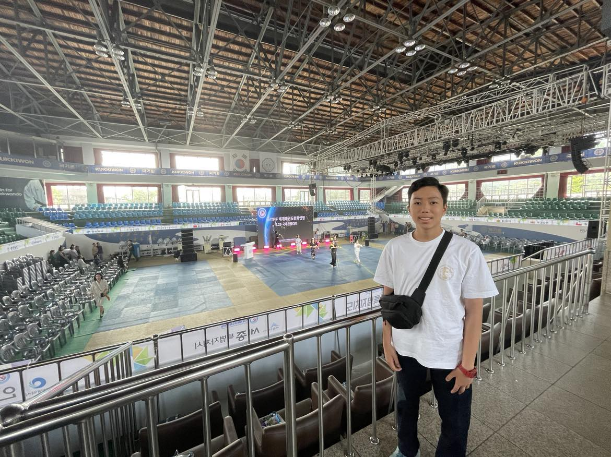
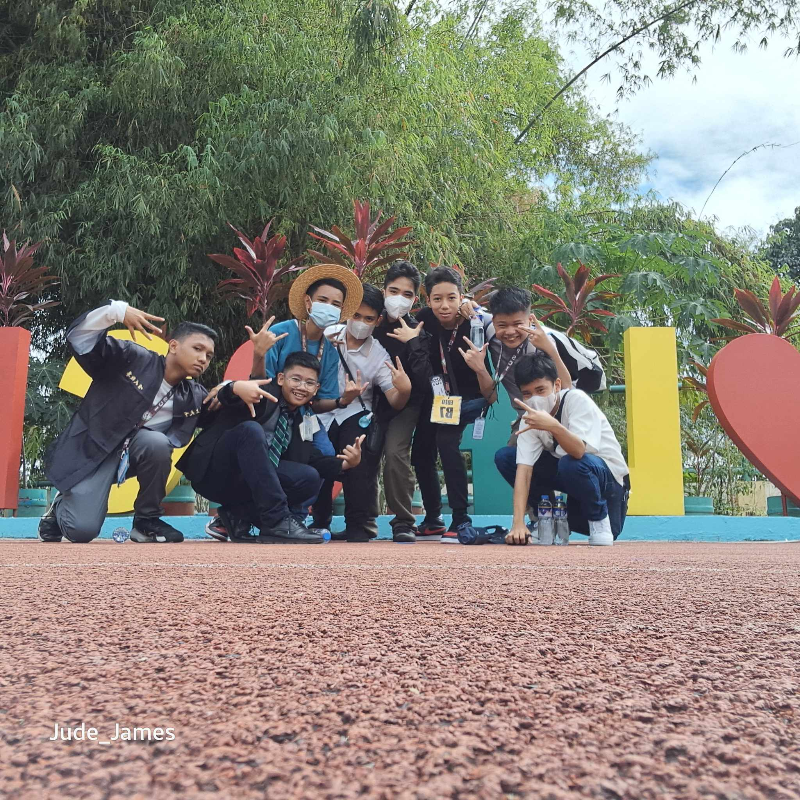
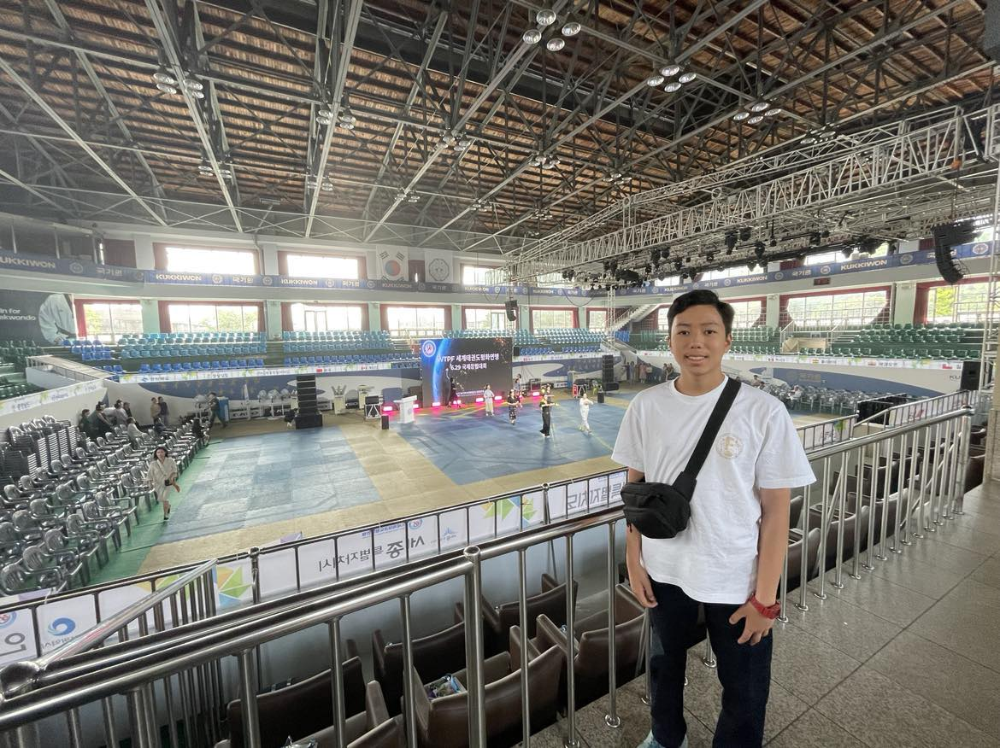
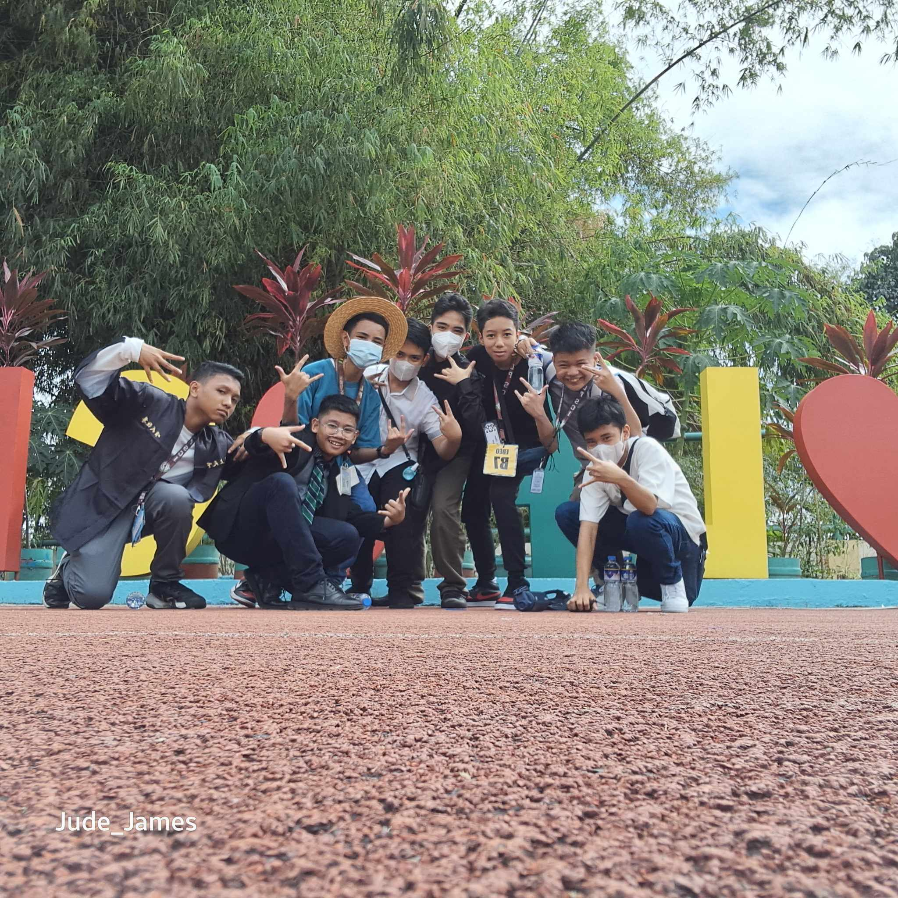

Pro Tip: For a better experience, play this background music while reading my portfolio:
About Me
 



I am Trevis Emor S. Ebeo, a student at Las Pinas City National Science High School, formerly an elementary student at Divine Light Academy-Las Piñas. I was born in Koronadal City, South Cotabato, Philippines on January 28, 2010 at Allah Valley Hospital to my parents, Noel Ebeo and Charmaine Ebeo. We lived in Koronadal with my grandma, my aunt and uncle, and two of my cousins for about 3 months. My parents and I moved to Metro Manila, marking my first ever airplane ride. Ever since, we stayed in Metro Manila(Las Piñas City to be specific) with visits back to Koronadal every now and then. Speaking of visits, I have been given many opportunities to visit many countries such as Cambodia, Vietnam, and Singapore to name a few. I also have many hobbies like playing the drums, guitar, and ukulele. I also play chess and online games, practice taekwondo, program using HTML, CSS, Javascript, and Python, and I even used to dance. I like listening to music, especially old music. For example, The Beatles, Elvis Presley, and Frank Sinatra.
- Favorite Song: The Beatles - In My Life
- Favorite Color: Blue
- Favorite City: San Francisco, USA
- Favorite Country: Italy
- Favorite Flags: Seychelles, St. Lucia, Barbados, St. Vincent and the Grenadines, and Kiribati
- Favorite Games: The Legend of Zelda: Breath of the Wild and Tears of the Kingdom
Favorite Stuff

Pro Tip: Click on the picture to see it fullscreen.


Pro Tip: Click on the picture to see it fullscreen.


Go to "CREDITS" to know who were the sources of my videos, pictures, and audios!